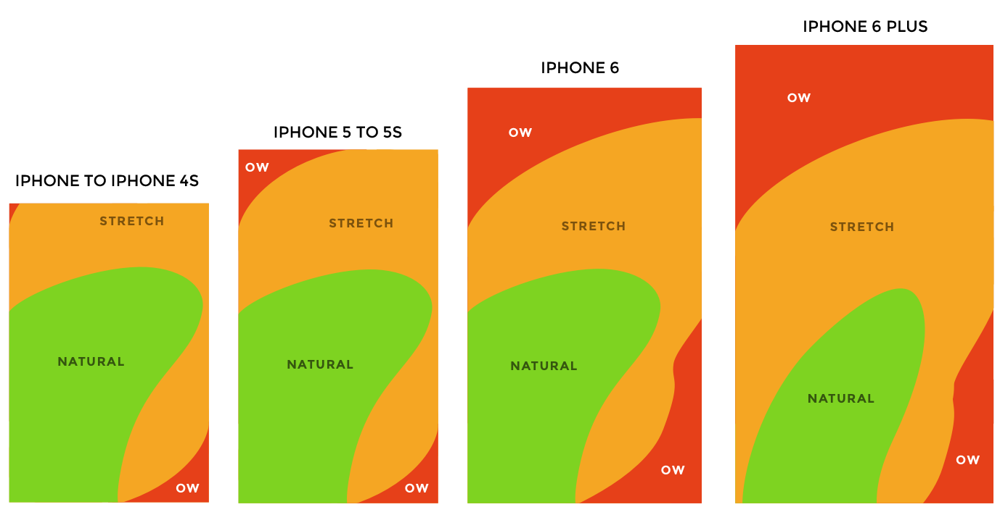

TiO-design
TiO is a community driven design System that allows brand to express their design in a unique, beautiful but
also functional way. Get creative and dive into a rich set of cross platform components that let you model
and
prototype design interactions easily.
TiO is currently work in progress, however we are working hard to create the first set of components
until mid 2019.
Why do we need yet another design system?
Don´t we already have Googles “Material Design”, Apples "Human Interface Guidlines" and Microsofts “Fluent
Design"?
Yes, but they all lacking features in specific areas:
One handed use

Envoirmental interactions
Bla blalalalaa theme swtich bla bla lalala brightness
bla bla particle button press bla bla, embrace the notch bla
Customizability
Bla bla composable, bla bla widgets, bla bla flutter
Expression of custom design/branding
Bla bla toolbar, fab and cards look shitty
Bla bla inkwell is overused bla bla
Navigation is always the same, hamburge
Open source and community driven!
Bla bla other people, bla bla contribution and shit